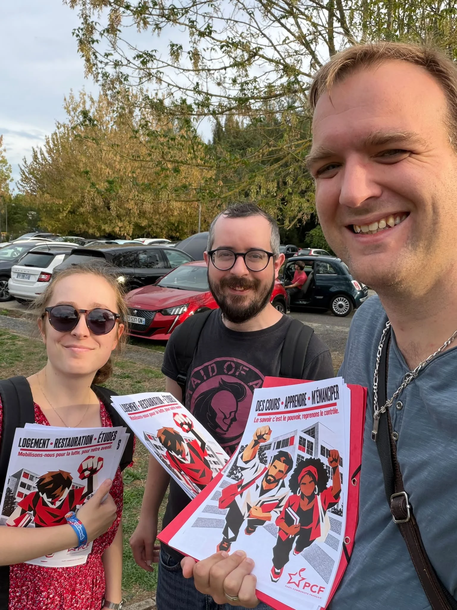

Publication du PCF 79
Mobilisés pour les lycéens et les étudiants
Date indiquée par Facebook · 6 octobre 2026
Texte conservé avec la publication
Mobilisés pour les lycéens et les étudiants ✊
Repères éditoriaux
« Mobilisés pour les lycéens et les étudiants » était notre légende du 6 octobre. Le visuel accompagne cette prise de position de la fédération aux côtés de la jeunesse mobilisée.

Sources
Archive rouge · export Facebook · AR-0002-FB-00660
À lire aussi · 6 octobre. « La lutte pour les droits, la mobilisation pour l’avenir »